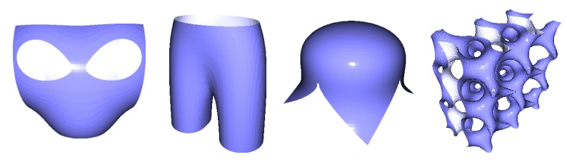
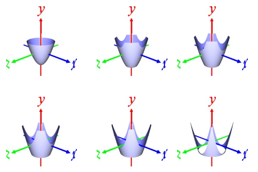
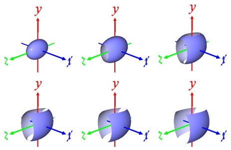
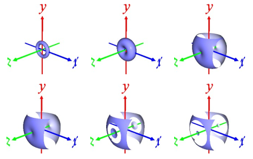
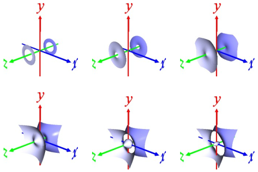
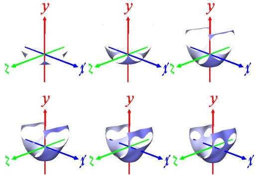
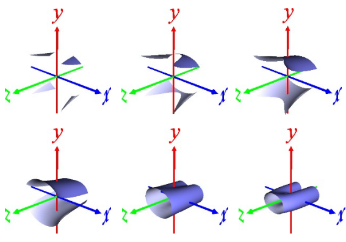
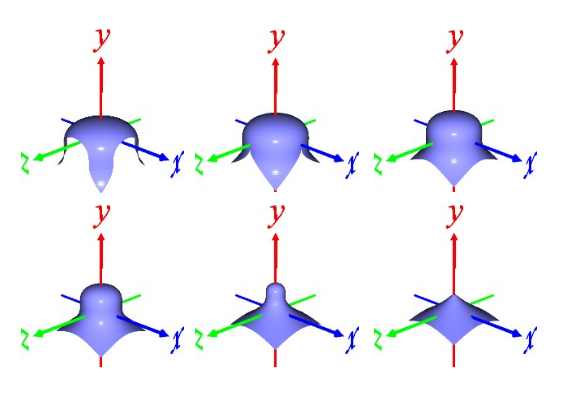
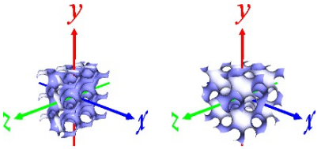

・f = x,y,zを含む陰関数式
定義域(x,y,z) 3次元 → 値域 f：1次元 で4次元立体を定義する。
・f = level による断面で3次元立体を定義する。
起動方法
python src/implicit_function.py (陰関数式)
・(陰関数式)：x, y, z を含んだ式
※ 陰関数式に x,y,z はすべて必要。使いたくない場合は +0*y などとする
操作方法
・矢印キー：level を上げ下げする
・7/8 キー：矢印キーで上げ下げする level のステップを小さくする/大きくする
・a キー：座標軸の表示/消去をトグルする
・c キー：矢印キー押下時にスクリーンキャプチャーする/しないをトグルする
・s キー：メッシュを保存し終了する
implicit.ply：オモテ＋ウラのメッシュ
implicitA.ply：オモテのみのメッシュ
implicitAA.ply：ウラのみのメッシュ
・ESCキー、q キー：メッシュを保存せずに終了する
(例) python src\implicit_function.py x+0*y+0*z
(例) python src\implicit_function.py 0*x+y+0*z
(例) python src\implicit_function.py 0*x+0*y+z
(例) python src\implicit_function.py x+y+z
(例) python src\implicit_function.py y-x**2-z**2

(例) python src\implicit_function.py (x/2)**2+(y/3)**2+(z/4)**2

(例) python src\implicit_function.py (1-np.sqrt(x**2+y**2))**2+z**2

(例) python src\implicit_function.py (1-np.sqrt(x**2+y**2))**2-z**2
トーラスの式のz成分の符号をマイナスに変更してみた

(例) python src\implicit_function.py ((x**2)+(y**2)+(z**2)+2*y-1)*((x**2+y**2+z**2-2*y-1)**2-8*z**2)

(例) python src\implicit_function.py (2.3-z)*((x-1)**2+y**2-0.5)*((x+1)**2+y**2-0.5)+z*(x**2+3/2*y**2-1)

(例) python src\implicit_function.py x**2+y**3+z**2

(例) python implicit_function.py x+np.sin(4*x)*np.cos(4*y)+np.sin(4*y)*np.cos(4*z)+np.sin(4*z)*np.cos(4*x)
(例) python implicit_function.py np.sin(3*x)*np.cos(3*y)+np.sin(3*y)*np.cos(3*z)+np.sin(3*z)*np.cos(3*x)
